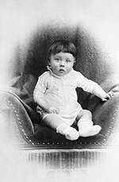
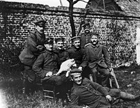
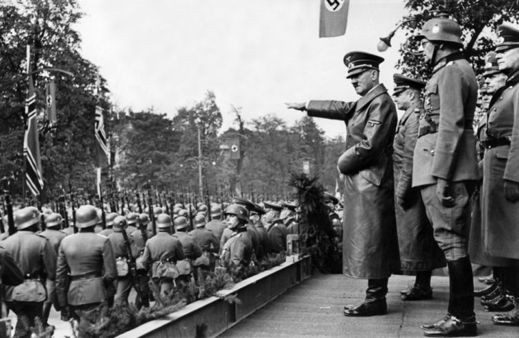

Адольф
Гитлер
Биография
Адо́льф Ги́тлер (нем. Adolf Hitler [ˈadɔlf ˈhɪtlɐ] 20 апреля 1889, деревня Рансхофен (ныне — часть города Браунау-ам-Инн), Верхняя Австрия, Австро-Венгрия — 30 апреля 1945, Фюрербункер, Берлин, Германия) — немецкий государственный и политический деятель, основоположник и центральная фигура национал-социализма, основатель тоталитарной диктатуры нацистской Германии, председатель Национал-социалистической немецкой рабочей партии (1921—1945), рейхсканцлер (1933—1945), фюрер и верховный главнокомандующий вооружёнными силами Германии (1934—1945).
Экспансионистская политика Гитлера стала одной из главных причин начала Второй мировой войны в Европе. С его именем связаны многочисленные преступления против человечества, совершённые нацистским режимом как в самой Германии, так и на оккупированных ею территориях, включая Холокост. Международный военный трибунал признал преступными созданные Гитлером организации (СС, Служба безопасности (СД) и гестапо) и само руководство нацистской партии.

Детство
Адольф Гитлер родился в Австрии, в городе Браунау-на-Инне близ границы с Германией 20 апреля 1889 года в 18 часов 30 минут в гостинице «У померанца». Через два дня был крещён именем Адольф. Гитлер был очень похож на мать. Глаза, форма бровей, рта и ушей были точно как у неё. Его мать Клара, родившая его в 29 лет, очень его любила. Перед этим она потеряла троих детей. 
До 1892 года семья жила в Браунау в гостинице «У померанца», самом представительном доме пригорода. Помимо Адольфа в семье жили его неполнородные (единокровные) брат Алоис и сестра Ангела. В августе 1892 года отец получил повышение, и семья переехала в Пассау.
24 марта 1894 года родился брат Эдмунд (1894—1900), и Адольф на некоторое время перестал быть в центре внимания семьи. 1 апреля отец получил новое назначение в Линц. Но семья ещё год оставалась в Пассау, чтобы не переезжать с новорождённым младенцем.
В апреле 1895 года семья переехала в Линц. 1 мая Адольф в возрасте шести лет поступил в одногодичную народную школу в Фишльгаме под Ламбахом. 25 июня отец неожиданно досрочно вышел на пенсию по состоянию здоровья. В июле 1895 года семья переехала в Гафельд близ Ламбаха-на-Трауне, где отец купил дом с участком.
В начальной школе в Фишльгаме Адольф хорошо учился и получал только отличные отметки. В 1939 году он посетил эту школу и купил её, а затем отдал распоряжение построить рядом новое школьное здание.
21 января 1896 года у него родилась сестра, Паула. К ней он был особенно привязан и всегда заботился о ней.
В 1896 году Гитлер поступил во второй класс Ламбахской школы старого католического монастыря бенедиктинцев, которую посещал до весны 1898 года. Здесь он тоже получал только хорошие оценки. Пел в хоре мальчиков и был помощником священника во время мессы. Здесь он впервые увидел на гербе аббата Хагене свастику. Такую же позднее он приказал вырезать из дерева у себя в канцелярии.
В этом же году из-за постоянных придирок отца из дома ушёл его неполнородный брат Алоис. После этого Адольф стал центральной фигурой отцовских забот и постоянного давления, так как отец боялся, что тот вырастет таким же бездельником, как и его брат.
В ноябре 1897 года отец приобрёл в деревне Леондинг под Линцем дом, куда в феврале 1898 года переехала вся семья. Дом находился около кладбища.
Адольф в третий раз сменил школу и здесь пошёл в четвёртый класс. Народную школу в Леондинге он посещал до сентября 1900 года.
2 февраля 1900 года умер брат Эдмунд. Адольф остался единственным сыном Клары Гитлер.Именно в Леондинге у него возникло критическое отношение к церкви под влиянием высказываний отца.
В сентябре 1900 года Адольф поступил в первый класс государственной реальной школы в Линце. Смена сельской школы на большую и чужую реальную школу в городе Адольфу не понравилась. Ему лишь нравилось проходить расстояние от дома до школы длиной в 6 км.
С этого времени Адольф начал учить только то, что ему нравилось — историю, географию и в особенности рисование; всё остальное игнорировал. В результате такого отношения к учёбе он остался на второй год в первом классе реальной школы.
Участие в Первой Мировой войне
Участие в Первой мировой войне
Основная статья: Военная карьера Адольфа Гитлера
1 августа 1914 года началась Первая мировая война. Гитлера обрадовало известие о войне. Он немедленно подал заявление на имя короля Баварии Людвига III, чтобы получить разрешение служить в баварской армии. Уже на следующий день ему предложили явиться в любой баварский полк. Он выбрал 16-й резервный Баварский полк («полк Листа», по фамилии командира).
16 августа он был зачислен в 6-й резервный батальон 2-го баварского пехотного полка № 16 (Königlich Bayerisches 16. Reserve-Infanterie-Regiment), состоящего из добровольцев. 1 сентября переведён в 1-ю роту Баварского резервного пехотного полка № 16. 8 октября присягнул на верность королю Баварии Людвигу III и императору Францу Иосифу.
В октябре 1914 года был отправлен на Западный фронт и 29 октября участвовал в битве на Изере, а с 30 октября по 24 ноября — под Ипром.
1 ноября 1914 года присвоено звание ефрейтора. 9 ноября переведён связным в штаб полка. С 25 ноября по 13 декабря участвовал в позиционной войне во Фландрии. 2 декабря 1914 года награждён Железным крестом 2-го класса. С 14 по 24 декабря участвовал в битве во Французской Фландрии, а с 25 декабря 1914 по 9 марта 1915 года — в позиционных боях во Французской Фландрии.

В 1915 году участвовал в битвах под Нав-Шапелем, под Ла Бассе и Аррасом. В 1916 году участвовал в разведывательных и демонстрационных боях 6-й армии в связи с битвой на Сомме, а также в сражении под Фромелем и непосредственно в битве на Сомме. В апреле 1916 года знакомится с Шарлотт Лобжуа. Ранен в левое бедро осколком гранаты под Ле Баргюр в первой битве на Сомме. Попал в лазарет Красного Креста в Белице под Потсдамом. По выходе из госпиталя (март 1917 года) вернулся в полк во 2-ю роту 1-го резервного батальона.
В 1917 году — весенняя битва под Аррасом. Участвовал в боях в Артуа, Фландрии, в Верхнем Эльзасе. 17 сентября 1917 года награждён крестом «За военные заслуги» 3-го класса с мечами.
В 1918 году участвовал в весеннем наступлении во Франции, в боях под Эврё и Мондидье. 9 мая 1918 года награждён полковым дипломом за выдающуюся храбрость под Фонтане. 18 мая получает нагрудный знак «За ранение» (чёрный). С 27 мая по 13 июня — бои под Суассоном и Реймсом. С 14 июня по 14 июля — позиционные бои между Уазой, Марной и Эной. В период с 15 по 17 июля — участие в наступательных боях на Марне и в Шампани, а с 18 по 29 июля — участие в оборонительных боях на Суасонне, Реймсе и Марне. Награждён Железным крестом 1-го класса за доставку на артиллерийские позиции донесения в особо тяжёлых условиях, чем спас немецкую пехоту от обстрела собственной артиллерией.
21—23 августа 1918 года — участие в битве под Монси-Бапом.
25 августа 1918 года Гитлер получил награду за службу III степени. По многочисленным свидетельствам, он был осмотрительным, очень смелым и отличным солдатом. Сослуживец Гитлера по 16-му Баварскому пехотному полку, Адольф Мейер, приводит в своих мемуарах свидетельство другого их сослуживца, Михаэля Шлеехубера, который характеризовал Гитлера как «хорошего солдата и безупречного товарища». По словам Шлеехубера, он «ни разу не видел», чтобы Гитлер «каким-либо образом испытывал дискомфорт от службы или уклонялся от опасности», равно как не слышал о нём за время его нахождения в дивизии «ничего отрицательного».
15 октября 1918 года — отравление газом под Ла Монтень в результате взрыва рядом с ним химического снаряда. Поражение глаз — с этим временная потеря зрения. Лечение в баварском полевом лазарете в Уденарде, затем в психиатрическом отделении прусского тылового лазарета в Пазевальке. Находясь на излечении в госпитале, узнал о капитуляции Германии и свержении кайзера, что стало для него большим потрясением.
Участия во Второй Мировой
Эти претензии встречают резкий отпор. 3 апреля 1939 года Гитлер утвердил план вооружённого нападения на Польшу (операция «Вайс»).
23 августа 1939. Гитлер заключает Договор о ненападении с Советским Союзом, секретное приложение к которому содержало план раздела сфер влияния в Европе. 1 сентября произошёл инцидент в Глейвице, послуживший поводом для нападения на Польшу (1 сентября) ознаменовавшего начало Второй мировой войны. Разгромив в течение сентября Польшу, Германия в апреле-мае 1940 г. оккупировала Норвегию, Данию, Голландию, Люксембург и Бельгию и прорвала фронт во Франции. В июне силы вермахта заняли Париж и Франция капитулировала. Весной 1941 г.  Германия под руководством Гитлера захватывает Грецию и Югославию, а 22 июня нападает на СССР. Поражения советских войск на первом этапе советско-германской войны привели к оккупации немецкими и союзными ему войсками республик Прибалтики, Белоруссии, Украины, Молдавии и западной части РСФСР. На оккупированных территориях был установлен жесточайший оккупационный режим, уничтоживший многие миллионы людей. Однако с конца 1942 года немецкие армии стали терпеть крупные поражения как в СССР (Сталинград), так и в Египте (Эль-Аламейн). В следующем году Красная армия перешла в широкое наступление, тогда как англо-американцы высадились в Италии и выводят её из войны. В 1944 году советская территория была освобождена от оккупации, Красная Армия продвинулась в Польшу и на Балканы; в то же время англо-американские войска, высадившись в Нормандии, освободили большую часть Франции. С началом 1945 года боевые действия были перенесены на территорию Рейха.
Третий Рейх
Впервые словосочетание «Третий рейх» (нем. Drittes Reich, дословно «Третье государство») было пущено в оборот в 1923 году. Артур Мёллер ван ден Брук определил «рейх» как царство, неделимую державу немцев, с единым вождём (фюрером), предполагая, что вслед за разрушением первых двух рейхов (Священной Римской империи и Германской империи) на смену Веймарской демократии придёт третий рейх, который вновь соединит немцев под единым руководством. Философская идея «Третьего рейха» перекликалась с символизмом пророчеств Иоахима Флорского о «Третьем Завете» и «третьем» или «тысячелетнем царстве» Святого Духа на Земле. Идея упала на благодатную почву: Гитлер взял на вооружение этот словарь без изменений. Некоторое время термин «Третий рейх» употреблялся в качестве неофициального самоназвания германского государства. Однако к концу 1930-х годов отношение к этому названию изменилось: оно было сочтено нежелательно «монархическим» и запрещено в 1939 году.